Company snapshot
| Historical field | Tecfri |
|---|---|
| Principal legal identity | Tecfri, Sociedad Anónima (Tecfri S.A.) |
| Country / headquarters | Spain · Carrer de Berlín 11–13, ground floor, Barcelona |
| Formation | May 1982 or January 1983; original incorporation date unresolved |
| Main video-arcade operating period | 1983–September 1987 |
| Later legal event | Declared in necessary bankruptcy on June 5, 1989 |
| Leading business figure | Jorge Carreras Águila, company president by 1984 |
| Founding original-game engineers | Javier Valero, Luis Jonama, Josep Quingles (Desystem) |
| Senior commercial executive | Antonio “Toni” Inglés, vice president in 1985–1986 |
| Original commercial arcade titles | Six confirmed: Ambush, Hole Land, Crazy Rally, Sauro, Speed Ball, Tricky Doc |
| Wider portfolio | Licensed manufacture/distribution, prototypes, and other Tecfri-associated circuit boards; roles differ by title |
A company larger than its game credits
In the history of arcade video games, some manufacturers are remembered for a single character, a distinctive cabinet, or a famous series. Tecfri is harder to contain in one image. Its most recognizable original games include Ambush, Hole Land, and Crazy Rally, yet its surviving hardware tells a much wider story: Japanese-licensed video games manufactured for the Spanish and European markets; original printed-circuit boards assembled in Barcelona; foreign distribution negotiations; a separate development company; and a manufacturing operation that grew rapidly before confronting severe financial trouble. Tecfri also occupies an unusual position in the ancestry of Gaelco, another major name in Spanish arcade history. The engineers who created Tecfri’s early originals later founded Gaelco, and, as surviving court records show, that later company became one of Tecfri’s creditors.
This combination makes Tecfri an important case study in how the Spanish arcade industry actually worked in the 1980s. It was neither simply a game-development studio nor merely an importer attaching a local sticker to foreign hardware. The company operated in the space between design, electronic manufacture, regional distribution, and the licensing of overseas properties. A single board could be connected to several companies at once: the Japanese inventor of the game, the Spanish manufacturer adapting or assembling it, a regional distributor, and a cabinet builder supplying machines to operators. Counting all those products as games “developed by Tecfri” would obscure what the company accomplished.
The confirmed operating-era originals form a comparatively small group: Ambush (1983), Hole Land (1984), Crazy Rally (1985), and the 1987 trio Sauro, Speed Ball, and Tricky Doc. Tecfri-associated product records are much more numerous, but they include licensed versions of Japanese games, prototypes, difficult-to-classify reproductions, and board variants. Some historic advertising supplies remarkably strong evidence of legitimate licenses; other surviving boards supply no comparable paperwork. Preserving that distinction is essential to understanding the enterprise.
Tecfri’s arc was also exceptionally compressed. Within a few years it had launched original products abroad, expanded its Barcelona facilities, opened a Valencia-region operation, and won public recognition for exports and industrial activity. By September 1987, however, contemporary magazine coverage described the company seeking protection from creditors. A later judicial reckoning made its inability to meet obligations unmistakable. The surviving record is not a neat story of one doomed game or one fatal management decision. It is the history of a growing electronics business, shaped by the international arcade boom, and then overtaken by a financial crisis whose full causes remain partly documented.
The uncertain beginning: 1982, 1983, and the companies behind the name
Tecfri’s beginnings are better understood as a sequence of business and development decisions than as a single uncontested founding date. A Catalan institutional history places its establishment in May 1982, shortly after the closure of an earlier venture associated with engineer Javier Valero and entrepreneur Carreras. Valero’s detailed recollection, published decades later in an interview by Retrolaser, instead describes the organization of Tecfri and its development counterpart Desystem in January 1983. These accounts may refer to different stages—business establishment, corporate formation, or recruitment of an arcade-design group—but the original incorporation documents have not been recovered to settle the matter. The original filings are still needed before either date can be treated as definitive.
The entrepreneur at the center of the project was Jorge Carreras Águila, called Jorge or Jordi Carreras in different Spanish and Catalan sources. Contemporary Japanese trade reporting identified him as president of Tecfri S.A. by 1984; court publications later printed his full name. Carreras was much more than a name on a logo. He was the commercial figure around whom a cluster of electronics-related activities developed, and his leadership was central both to Tecfri’s international push and to its eventual internal disagreement with the original game engineers.
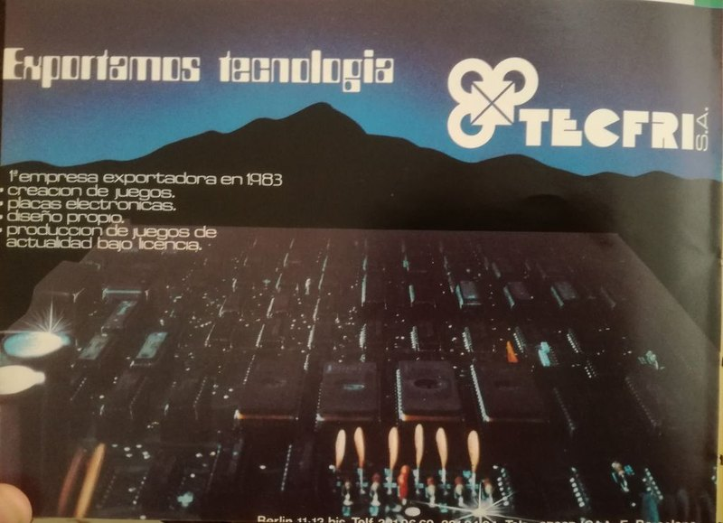
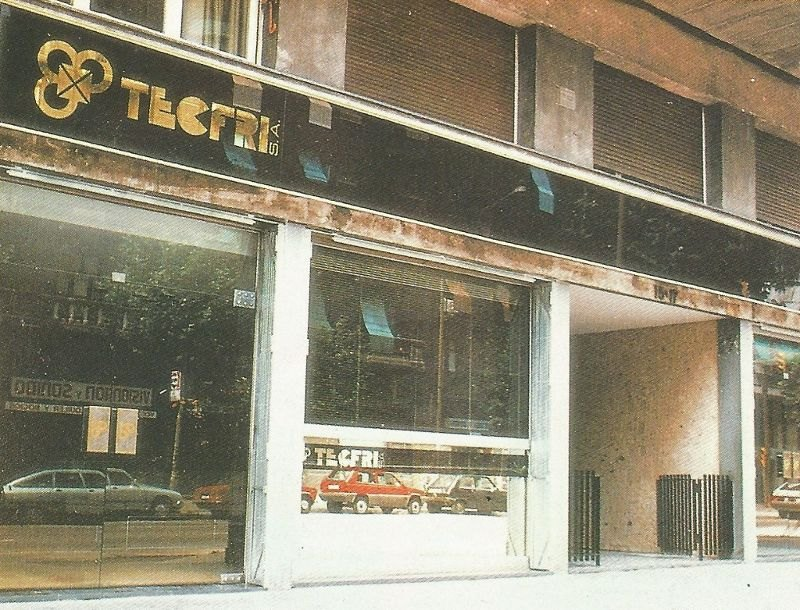
A crucial distinction is that Tecfri S.A. and Desystem S.A. were separate legal companies. Official Spanish registry and tax publications identify Tecfri S.A. under NIF A08769846 and Desystem S.A. under NIF A08776510, both registered in Barcelona. Valero recalled a deliberate division of labor: Desystem developed the games, while Tecfri handled manufacturing and commercialization. A Universitat Pompeu Fabra history likewise places Valero and his colleagues in the Desystem operation while the resulting machines appeared under the Tecfri brand. That arrangement explains why a game may be historically credited to Tecfri although the underlying engineering work was carried out by personnel associated with a different corporation.
According to Valero’s recollection, the early Desystem ownership structure assigned 52 percent to Carreras, 28 percent to engineer Luis Jonama, and 20 percent to Valero. Josep Quingles, another indispensable developer, was a salaried employee rather than a shareholder. These figures are valuable testimony, but a shareholder register or original corporate filing has not independently confirmed them. Nor does the numerical proximity of the two companies’ tax identifiers establish which legal corporation was registered first. The organization must therefore be described with the distinction between official entity identity and recollected ownership intact.
The Barcelona headquarters lay at Carrer de Berlín 11–13, ground-floor premises in the Sants/Les Corts area. This address appears in historical company materials and the later bankruptcy notice. Development benches, components, staff, and commercial functions were associated with the site; its space later expanded. Tecfri was not simply renting a room to sell imported boards. Yet there is no reason to assume that every production operation, such as fabrication of the bare printed-circuit substrates, happened under that roof. Some of that work was performed by specialist suppliers elsewhere in Catalonia.
The earliest company advertisement recovered from the Tecfri period archive dates to 1983. It establishes the public name as a commercial concern by that year, but its presence alone cannot arbitrate between the 1982 and 1983 formation accounts. What the evidence does establish is that a Barcelona electronics business had assembled a talented arcade engineering team at precisely the moment when coin-operated video games remained an international commercial opportunity. Its first product would be engineered for a market far wider than Barcelona.
From wire-wrap boards to the runway of Ambush
The inaugural original game, Ambush (1983), emerged from a small group whose responsibilities Valero later described in unusual detail. He handled the hardware and important flight sequences, including takeoff and landing; Quingles contributed sound and a stage; and Jonama programmed much of the remaining game. The early development process involved wire-wrap prototype construction, TTL-era electronics, and Tektronix CPU-development equipment—expensive technical tools that suited an ambitious electronics workshop better than the romantic image of a game designed entirely on a home computer. A design could be proved in a prototype, converted into manufactured circuit boards, assembled into working products, and prepared for the operator market.
Ambush presents itself as a forward-moving space-flight combat game. The player’s craft moves through an approaching landscape, with the need to navigate, attack, and return safely. Its visual language is characteristic of a period when arcade designers sought to convey depth and motion without the later conventions of fully polygonal 3-D games. Some Japanese advertising called the effect a “3-D visual system.” That contemporary promotional phrase is revealing evidence of how the game was sold, not proof that the board used later-style three-dimensional rendering hardware. The distinction matters because the technological claims of arcade advertising can be both historically informative and highly enthusiastic.
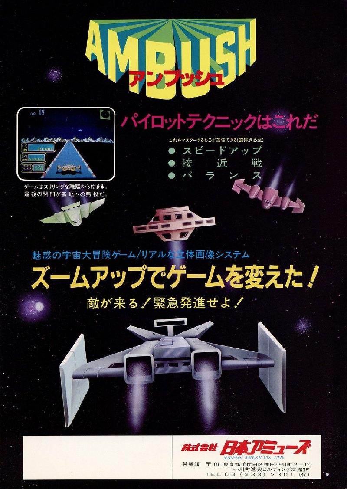
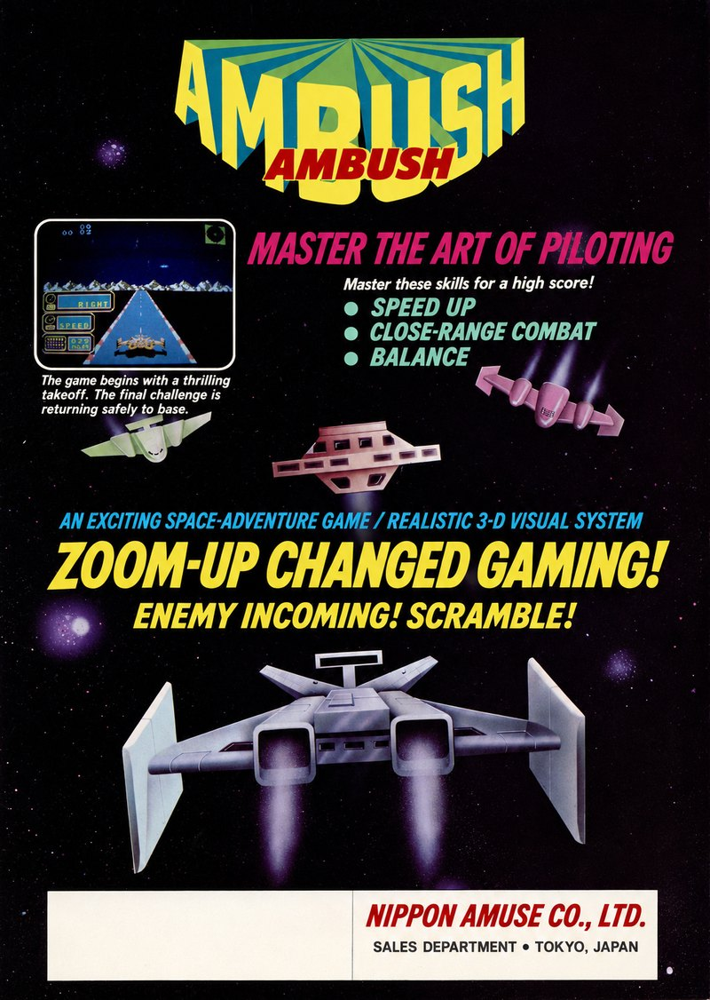
Valero recalled that Ambush required approximately nine months of work. That recollection raises a chronology puzzle. Technical histories sometimes give June 1983 as the Japanese version’s release date, while Valero places the Tecfri/Desystem organization at the beginning of that same year. A full nine-month development followed by a June release would imply either work undertaken before the recalled organizational milestone or a problematic release date. Neither alternative is established. The safest account is that Ambush was commercialized in 1983, while the exact beginning and foreign launch months remain open.
The game’s Japanese life is particularly well documented. A surviving advertising sheet names Nippon Amuse Co., Ltd. in Tokyo, and preserved Japanese ROM content bears a corresponding company identity in place of Tecfri’s screen marking. The paperwork and software evidence reinforce one another: Nippon Amuse did not merely report an interest in the game; a Japanese version existed and was marketed. Valero later recalled traveling to Japan and described production on the order of at least ten thousand units there. Some later regional histories echo that large figure. It is evidence of how participants remembered the scale, not an independently audited sales ledger. Recollections of the associated payment also differ, leaving the exact proceeds unsettled.
The first game also circulated within Spain through machines and variants associated with other manufacturers. Preservation records identify Tecfri’s Ambush registration/homologation reference A/00/00252; Arfyc and Joctronic-related machines, including Black Patrol, show how the concept traveled through a distributed cabinet market. They are evidence of distribution and cabinet-building networks, not additional Tecfri-created titles. Cabinet builders, rights holders, and board manufacturers occupied distinguishable roles.
There is a valuable visual way to tell this story. The surviving original Japanese Ambush flyer shows the game’s distinctive craft, flight imagery, and Nippon Amuse imprint. A modern, user-contributed English translation of the same advertisement can help readers understand its claims. The original remains evidence of period Japanese marketing; the translated version is a present-day editorial aid, not a period English-language release.
Hole Land and the leap to international licensing
Tecfri’s second original, Hole Land (1984), turned its overseas ambitions into a documented licensing arrangement. Like Ambush, it was associated with Valero, Jonama, and Quingles, yet it moved through a different commercial structure. Rather than treating Japan as an isolated export opportunity after domestic success, Tecfri negotiated a wider territorial arrangement that specifically recognized the world beyond Spain.
Contemporary Japanese trade reporting in Game Machine places Hole Land at the IMA exhibition in West Germany in January 1984. This is valuable because it confirms a foreign public presentation before the formal agreement described later that spring. Tecfri also pursued U.S. trademark filings for the forms HOLELAND and HOLE LAND on February 28, 1984, another indication that the title was being treated as an internationally marketable property. These milestones show a rights strategy developing alongside the game itself.
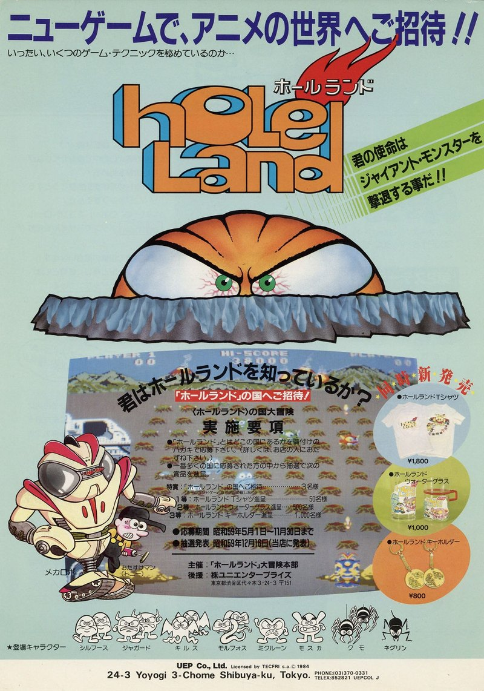
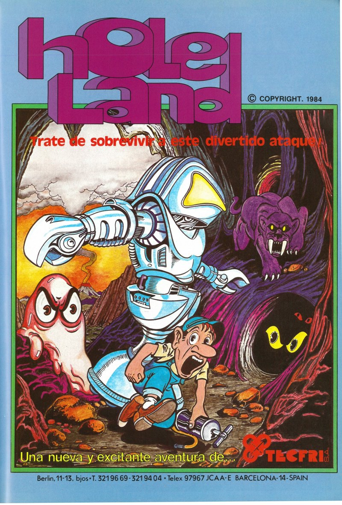
On April 6, 1984, Tecfri entered a commercial relationship with Japan’s Uni Enterprise Co., Ltd. A June 1 issue of Game Machine reported the agreement and a signing ceremony involving Tecfri president Jorge Carreras and Uni Enterprise’s president. Uni Enterprise received exclusive rights to sell the game throughout the world except Spain, where Tecfri retained the rights. The Japanese company’s territory included Japan and the United States. That arrangement is stronger documentary evidence than the loose phrase “exported to Japan.” It states who held selling rights and which market was reserved for Tecfri.
On April 20, Uni Enterprise organized a private Hole Land presentation at the Hotel Century Hyatt in Shinjuku, Tokyo. According to the contemporary report, about 350 operators attended. The event suggests the distributor was prepared to devote substantial operator-facing attention to the product. It also places Tecfri’s game within the Japanese trade-show and distributor network, rather than solely in the specialized Spanish arcade sector where its first development team worked.
A surviving Japanese Hole Land flyer carries the company name UEP Co., Ltd. and the line “Licensed by TECFRI s.a.” with a 1984 copyright notice. Spanish archives commonly abbreviate the Japanese partner as UEP, while period directory material links the UEP identity to Uni Enterprise. It would be misleading to create an additional entirely separate rights-holder from a distributor abbreviation without evidence. The printed flyer is nevertheless a direct period artifact of how the game was sold in Japan. Tecfri-branded Spanish artwork gives the title a different market voice, preserving two complementary versions of the same product.
The software was localized as well as the paperwork. Spanish and Japanese board versions have different speech-language options, and the product used a General Instrument SP0256 speech synthesizer. This matters because local versions of the game were not necessarily identical to the export original. Electronic design, speech assets, ROM versions, publicity, and operator material could all be adapted to a country’s language and rights territory. For a relatively small Barcelona concern, that represented a sophisticated level of market awareness.
The global arrangement also raises a still unresolved licensing question. Technical-history sources name New Digimatic in connection with Hole Land rights for Italy, Switzerland, Greece, and Portugal. Such a claim does not fit comfortably with a literal reading of Uni Enterprise’s exclusive outside-Spain territory unless it represents a sublicense, later change, or faulty secondary attribution. No original New Digimatic contract has been recovered, leaving its position in the territorial rights chain uncertain. The April 1984 agreement itself, however, marks a clear ascent for Tecfri’s original-game business.
Licensed boards were not a side business
A history centered only on the half-dozen original Tecfri games would miss much of what operators encountered. The firm’s boards and promotional sheets document a substantial business in adapting, assembling, and distributing other companies’ games. Some were supplied under expressly stated licenses; other products are known primarily from surviving circuit boards, manuals, or emulator ROM sets and remain harder to classify. Understanding this difference is more important than creating an artificially impressive count of original titles.
One early example was Bomb Jack, a 1984 game originally designed by Tehkan. Spanish records preserve a Tecfri manual, a board, and advertising for the Spanish version. The surviving electronic version is classified in MAME as a Tehkan title produced under Tecfri license. It is part of Tecfri’s industrial history but not evidence that its Barcelona development team conceived Bomb Jack. The story is one of authorized territorial manufacture and the practical requirements of getting an overseas success into the Spanish arcade trade.
Buggy Challenge, from Taito, likewise appears as a Tecfri-associated product with period sales evidence. A later Covielsa cabinet associated with the Tecfri board demonstrates the next layer in the chain: another company could make or sell the complete machine while using electronics derived from a licensed manufacturing arrangement. Zippy Race, also known as Moto Tour, similarly connects Tecfri to Irem’s original game. A product catalog based on cabinet names alone could make a single electronics relationship look like several independent game releases, while a catalog based only on ROMs could hide the Spanish manufacturing and sales role entirely.
The company continued working with multiple Japanese rights holders during 1985. Preserved Pinball Action variants identify the original Tehkan game and Tecfri license. Indoor Soccer appears as an original Universal game with a Tecfri-licensed board. The technical implementations were not necessarily identical to the original parent boards, and Spanish-language instructions, alternative displays, or mounting arrangements sometimes accompanied them. They show a company conducting ongoing assembly and commercialization work between original design cycles.
Sega-related boards form another important branch. Choplifter and Pitfall II survive with Tecfri and Sega markings and corresponding preservation descriptions of the licensing relationship. Wonder Boy illustrates a cautionary case: contemporary Tecfri-style promotional material advertises a Sega license and surviving board evidence includes Sega markings, while the MAME set name still labels the Tecfri version a bootleg. The conflicting labels are themselves part of the surviving record. The combined period advertising and physical evidence supports describing a Sega-licensed Tecfri product, while also disclosing the technical database’s incompatible nomenclature.
A separate group of boards, including Tecfri-marked versions of Karate Champ, Sector Zone, Shoot Out, Spartan X, and Tiger-Heli, is classified in modern technical-preservation records as bootleg or unauthorized hardware-copy variants. That classification describes surviving ROM sets and hardware configurations; it does not establish any individual executive’s motives or legal responsibility. Some other titles, such as Bank Panic and a Tecfri-marked 1942 PCB, retain conflicting or tentative authorization descriptions. They are neither confirmed licensed products nor reliable evidence for sweeping statements that all Tecfri versions were unauthorized.
This varied portfolio explains the company’s simultaneous visibility across apparently unrelated games. Operators buying a Tecfri version of a famous Japanese title were dealing with a local electronics manufacturing and distribution layer. A collector discovering a Tecfri logo on an original board may have found evidence of an authorized regional adaptation, a technically identified copy, or an unresolved case requiring more documentation. The distinctions affect the historical meaning of the objects and even the identity of the companies involved.
Crazy Rally and the last games of the founding team
Crazy Rally arrived in 1985 as Tecfri’s third strongly established original commercial game. It replaced Ambush’s space-flight presentation and Hole Land’s action with a driving format in which the road scrolls past the player. The design offered operator-adjustable control options, including joystick or steering-wheel operation. That flexibility is easy to overlook today, but it mattered in an industry built on cabinets already standing in bars, amusement halls, and other locations. A board that worked with more than one control arrangement could reach operators without requiring an entirely new dedicated machine.
The game is associated with the same three engineers as the earlier titles: Javier Valero, Luis Jonama, and Josep Quingles. Its surviving commercial identity is substantial. Tecfri-branded Spanish flyers and actual Crazy Rally circuit boards survive, and versions distributed through Recreativos Franco and the Italian company generally identified as Gecas show that the game traveled beyond its originating firm. Secondary sources vary in spelling the Italian company’s name, and the precise contracting entity remains uncertain. The existence of other commercial versions is clearer than the full rights chain.
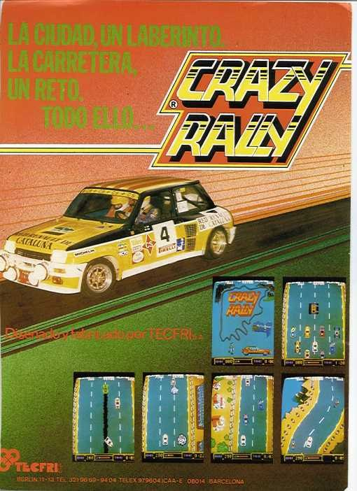
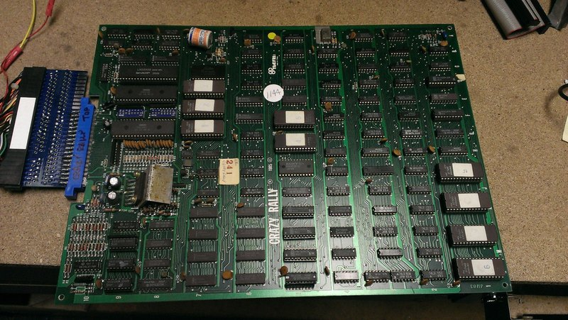
At almost the same moment that Tecfri was enjoying its third original product, disagreement was building inside the organization. Valero’s later account describes the engineering team becoming frustrated with management and wishing to see a professional general manager installed. In August 1985 Valero and Jonama agreed to request a change. If Carreras declined, they would leave after resolving one of two pending projects. One proposal was a modular development system; the other was MPP, or Multi Pole Position, a proposed linked racing arrangement for multiple players. Surviving MPP schematic material carries a May 1, 1985 date, fixing the concept as a real technical project rather than a story reconstructed entirely from memory.
Carreras chose the modular system. The management request did not produce the desired organizational change, and the engineers left. Valero and Jonama founded the enterprise known as Gaelco, an abbreviation of Gabinete Electrónico Consultivo, with Quingles joining them. Sources give late September or October 1985 for Gaelco’s foundation. As with Tecfri’s own beginnings, the month is more secure than the precise incorporation day in the presently available material.
The departure is often told as a clean transfer from one game studio to another. It was more complicated. The men were responsible for Tecfri’s initial original-games success, and Valero and Jonama also held Desystem shares according to Valero’s account. Their loss removed the company’s proven design core, but it did not automatically eliminate Tecfri’s manufacturing and licensed-board work. Nor did Gaelco immediately produce a direct succession of arcade video games. Its early projects included electronic controllers for other commercial products such as coin-operated rides, pinball equipment, and darts. Its recognizable original arcade line took further time to develop.
The division matters for interpreting Tecfri’s later products. All three men reappear in staff-credit evidence for 1987 Tecfri games, although the men had formed Gaelco in 1985. A simplistic story would declare those credits erroneous or assume the engineers secretly remained Tecfri employees. Neither follows. Development work might have been completed before the split, continued under contract, performed through a continuing Desystem relationship, or finished by others using earlier designs. The existing ROM and source evidence confirms involvement more strongly than it fixes employment dates. The split thus marks a decisive organizational change, not an exact boundary beyond which the engineers’ work ceased to exist in Tecfri products.
The changing manufacturing business of 1986
The public record of 1986 portrays Tecfri as a concern still expanding rather than immediately retreating after the original team’s exit. Spanish trade coverage documented enlargement of the Barcelona premises and reported on new production machinery. The company advertised licensed products, maintained relationships with Japanese manufacturers, presented at trade shows, and attracted official industrial recognition. Its story that year is especially vivid because original period photographs and magazine pages survive—not merely titles in a database.
A Revista AZAR article titled Una Gran Expansión described the enlarged facilities at calle Berlín and presented machinery as part of a technological modernization effort. It mentioned an automated double-wave soldering machine approximately nine meters long, equipment capable of inserting about 3,500 components per hour, and a temperature-controlled oven associated with quality assurance. These statements are contemporary reporting about the company’s installed or promoted capacity; they are not independently audited production logs. Nonetheless, they show that the business promoted industrial-scale assembly methods rather than only hand-built development prototypes.
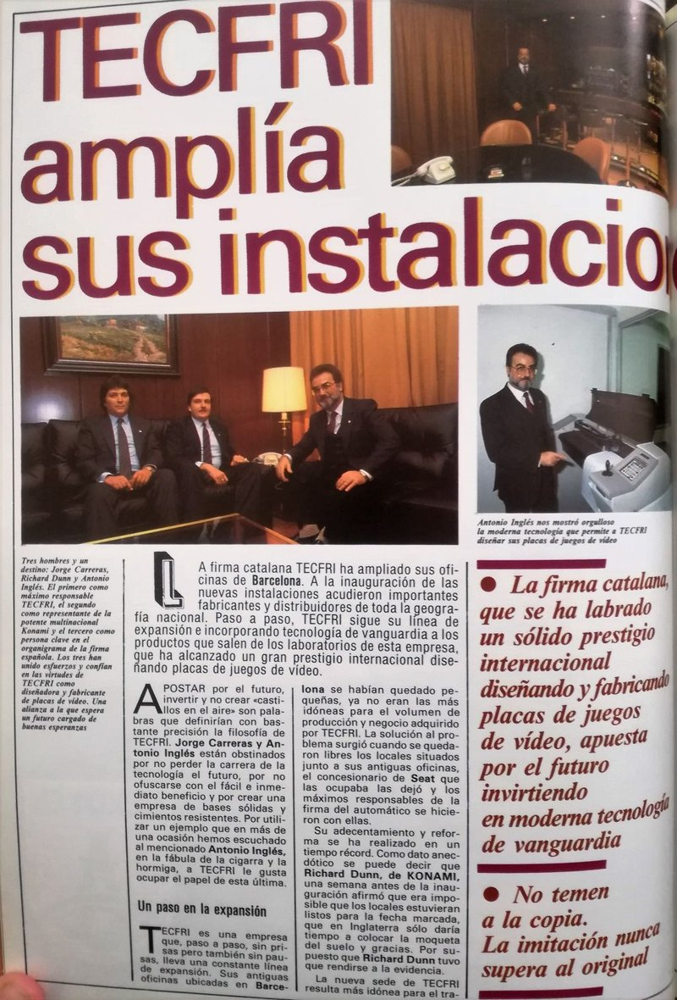
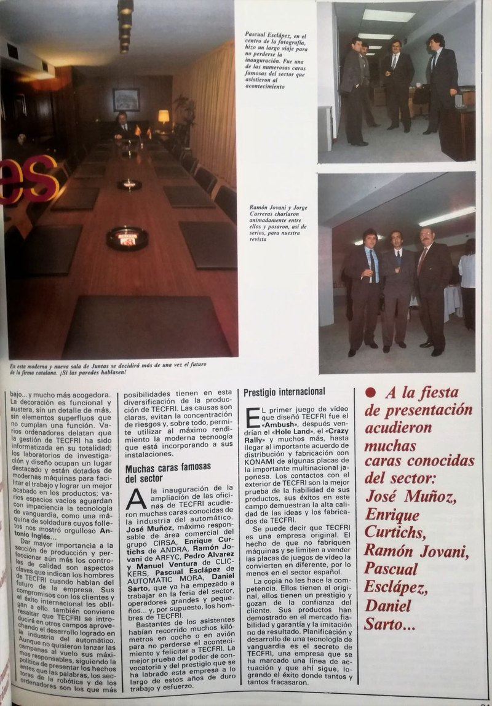
Valero’s earlier recollections provide useful context for that expansion. Tecfri did component assembly within its operation, while bare printed-circuit substrates were fabricated by outside companies. ELBASA, or Electrónica Básica S.A., in Esparreguera, was an early supplier; the business later used LAB CIRCUITS in Santa Maria de Palautordera. An official 1986 Spanish record independently documents ELBASA as a printed-circuit manufacturer, supporting the supplier’s existence and capabilities. The distinction between manufacturing the bare board, populating it, testing finished electronics, and assembling a complete cabinet helps explain both Tecfri’s technological strengths and the economic commitments involved in its growth.
Spanish government records provide firmer evidence that the company’s industrial profile was being noticed. An order dated December 30, 1985 and published on May 3, 1986 recognized Tecfri S.A. as an enterprise within the preferential-interest sector for electronics and information-technology manufacturing under the applicable royal decree. It is important not to misstate what such an administrative order proves. It recognized Tecfri under a government industrial program; it did not guarantee a successful business or certify that every marketing statement about production output was correct. In retrospect, the official recognition is striking because serious financial problems followed within roughly a year and a half.
The new production posture can also be observed through the license list. A Tecfri version of Data East’s Break Thru is supported by a board, Spanish documentation, a period flyer, and modern emulator descriptions of a license. Its PROM differences are evidence that the locally produced implementation was not always electronically identical to the source board. The Speed Rumbler, originally from Capcom, appears as another clearly documented Tecfri license with preserved Spanish manual and board evidence. Likewise, Tecfri-marked products associated with Nichibutsu include Soldier Girl Amazon, Ninja Emaki, and UFO Robo Dangar; surviving physical material shows the manufacturer relationships in the boards themselves.
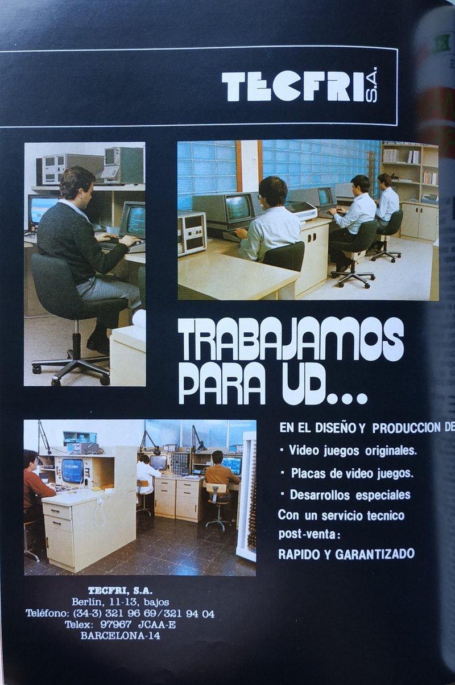
What emerges is not a singular change from creativity to distribution. Tecfri’s original catalog was small but significant; its broader product line was a continuing industrial activity. The same company could be developing or releasing a distinctive in-house game, manufacturing an authorized Spanish version of a Japanese hit, and preparing supporting advertising for trade customers. The 1986 boom in public visibility is consistent with that mixed business model, while the heavy investment that enabled it would also make subsequent cash-flow problems more consequential.
Konami and Tecfri’s international business network
The Japanese game giant Konami became one of the most visible names connected to Tecfri’s licensed operations. One preserved period clipping, headed “Tecfri comercializará Konami en Europa,” specifically reports an arrangement negotiated under Antonio Inglés to market *one Konami game, Finalizer, throughout Europe. It does not establish exclusive rights to Konami’s entire European catalog. A surviving Spanish promotional sheet for Finalizer* likewise describes production in Spain and European distribution by Tecfri under Konami license. Together, the clipping and flyer document a concrete manufacturing and commercial arrangement, not merely an inference from a ROM archive.
The same pattern appears in Salamander, preserved as a 1986 Konami game with a Tecfri-licensed Spanish board, operator documentation, and promotional material. GT-2 / Konami GT and Scooter Shooter are further examples within the documented Konami-linked product family. Taken together, these products are stronger evidence of a recurring business relationship than a single game labeled “Tecfri” on a modern enthusiast site. The exact territorial exclusivity of every individual agreement remains a separate question, particularly where later accounts use sweeping phrases such as all of Europe.
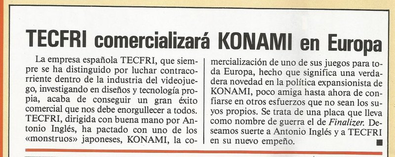
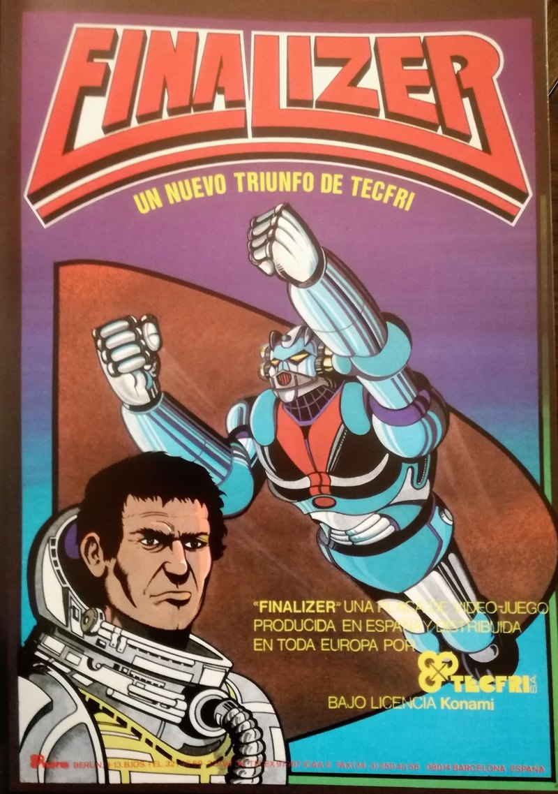
The company’s international connections involved people as much as rights paperwork. Antonio “Toni” Inglés was a central member of Tecfri’s commercial leadership and was described as vice president in 1985–1986 contemporary material. He had experience dealing with arcade-industry suppliers and international customers, and the archival press depicts him as an articulate advocate for both technology and serious manufacturing standards. One 1986 AZAR feature paired him with Carreras in a substantial interview. The pages argue for quality, greater professionalism, and modernization, while portraying the firm as both financially and technologically independent. The latter was a management claim at the time, not a guarantee of future solvency.
The same archive preserves a remarkable 1986 Japanese report titled Konami, un ejemplo de perfección, with text and photographs credited to Antonio Inglés. Its visible opening page describes a Konami facility event around Kobe and discusses a technologically ambitious company culture. It is useful evidence of how Tecfri’s commercial executive encountered and presented Japanese electronics manufacturing to Spanish readers. Its visible subject is Konami’s own industrial operation, rather than a complete account of any specific Tecfri–Konami contract.
Tecfri’s licensing reach was not limited to one Japanese business. Tehkan, later known as Tecmo, contributed the original games behind Spanish Tecfri versions of Bomb Jack, Pinball Action, and Star Force. Capcom-related local products included The Speed Rumbler and Side Arms. Nichibutsu’s games were another recurrent source. Data East, Taito, Sega, Universal, Irem, and SNK appear in the broader historical role census. It is precisely this diversity of counterparties that makes Tecfri’s business structure difficult to reduce to the familiar list of six originals.
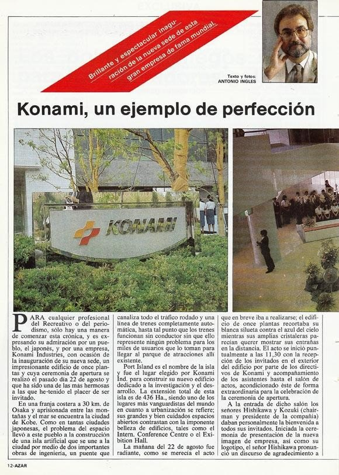
There is no need to assume that all such relationships were equally exclusive or that all surviving Tecfri-associated copies were authorized. The strongest cases include explicit period license wording, credible physical manufacturer marks, and matching documentary trails. A surviving bare board establishes a hardware connection, but not the contents of a missing contract. The period Konami agreement and advertising demonstrate what real evidence of commercial authorization looks like and supplies a standard for assessing the less certain cases.
The people and premises behind the expansion
The company photographs and magazine interviews make an institutional story more personal. Jorge Carreras Águila occupied the leading business position and was Tecfri S.A.’s president in documented foreign dealings. Antonio Inglés served as a senior commercial executive and vice president during the 1985–1986 expansion. Javier Valero, Luis Jonama, and Josep Quingles built the reputation of Tecfri’s original-game engineering. The shared brand concealed substantially different responsibilities. The designer of the electronics was not necessarily the party negotiating international rights, and a company president did not automatically write its arcade software.
Other period records fill out the organization. Tecfri’s presentation at the FER 86 fair included advertising identifying Juan José Domenech as the person responsible for sales. The Valencia-region operation had its own visible personnel and office reports, including 1986 interviews with Luis Rojas. His exact formal title has not been established from the surviving evidence. These documents nevertheless show that Tecfri was more than its founding handful of engineers.
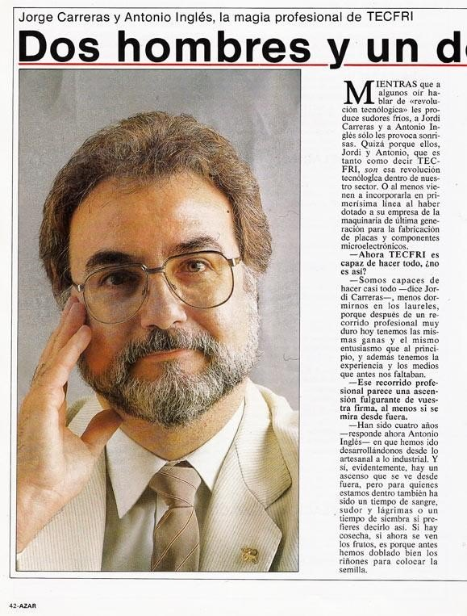
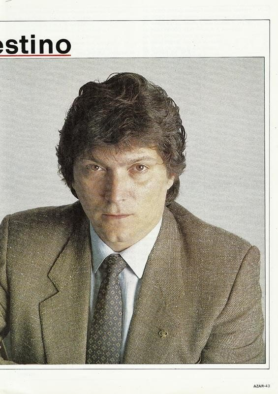
The Barcelona site at Berlín 11–13 was an unusually important physical anchor. Contemporary advertisements and the subsequent court record identify the ground-floor address; one preserved photograph depicts company signage across the premises in 1987. Spanish magazine coverage of an inauguration in 1986 documents the expansion of the site. A larger workplace meant space for assembly processes, testing, management, visitors, and equipment that could no longer plausibly be described as a small experimental bench. The facility also housed business activities associated with more than one legal corporation, a detail that complicates the simple question “Where was Tecfri made?”
The source record contains one useful address wrinkle. The Sauro commercial flyer uses the Barcelona range Berlín 11–17, while an original Finalizer advertisement and official legal records give Berlín 11–13. Those differences could reflect adjacent premises incorporated during expansion, variations in commercial stationery, or an error on one publication. The evidence does not presently decide among those explanations. The legal record places Tecfri at Berlín 11–13, while the wider address remains visible in the original advertising. A present-day address match alone cannot prove the original shopfront still stands unchanged.
Tecfri’s geographic expansion also extended beyond Barcelona. A 1986 Revista AZAR article introduced the first Valencia delegation with a photograph of four men in front of a large TECFRI LEVANTE sign. Other period reports discuss its offices and interviews with locally associated staff. An original Sauro flyer prints the Tecfri Levante contact at Avenida de Campanar 116 in Valencia, a useful contemporary address that strengthens the geographical record. This was not merely the informal name of a traveling sales representative. Official Spanish records identify Tecfri Levante S.A. as a separate company registered in Valencia, NIF A46333985.
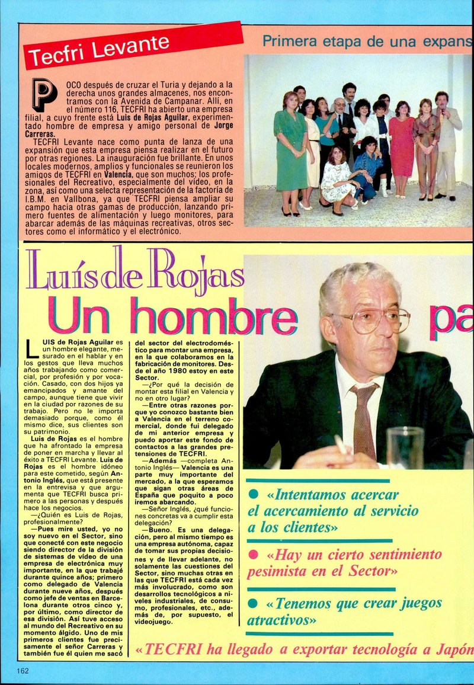
Yet corporate separation is not synonymous with a clear ownership map. The historical evidence strongly suggests an operational affiliation between Barcelona Tecfri and Tecfri Levante, but the shareholding, directors, and exact incorporation date of the Valencia company have not been established from the available official notices. Later tax and registry publications that still named the Valencia entity years after 1987 prove administrative persistence, not that the arcade operation remained active in the 2000s. Tecfri S.A. and Tecfri Levante S.A. were distinct legal entities, and the continued appearance of the latter in administrative records is not evidence of continued arcade production.
The same restraint applies to Electro Plastic S.A. Period Super Pinball material links that name to the same Barcelona address and to cabinets associated with Tecfri’s Speed Ball and Music Ball. Those advertisements are evidence of actual product connections, but no trustworthy Spanish corporate filing has yet established that Electro Plastic was a legally controlled Tecfri subsidiary. A Brazilian plastics business with the same name appears in modern records but has not been connected to the Barcelona arcade enterprise. The firm was part of a broader product and manufacturing environment; its exact legal relationship remains open.
Sauro, Speed Ball, and Tricky Doc: originals after the split
Tecfri’s original-game story did not end when its first engineering trio formed Gaelco. Three commercial games widely dated to 1987—Sauro, Speed Ball, and Tricky Doc—remain associated with the Tecfri or Tecfri/Desystem names. Their existence makes the late period both more productive and more historically complicated than a simple narrative of decline after 1985 would allow.
Sauro is a side-scrolling action game from the company’s final operating year. Tecfri period artwork proudly credits it as designed and manufactured by the firm. Surviving technical records and the game’s embedded staff information connect it to Valero, Jonama, and Quingles; variations circulated through other companies, including Philko and Recreativos Real. Its material legacy includes original advertising and recognizable board hardware, and its ROM history supports treating it as a released game, not a planned but uncompleted design. The date on the package is more secure than the precise dates when each engineer performed their work.
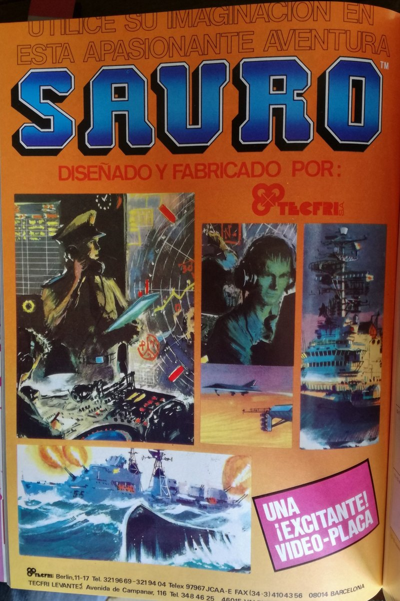
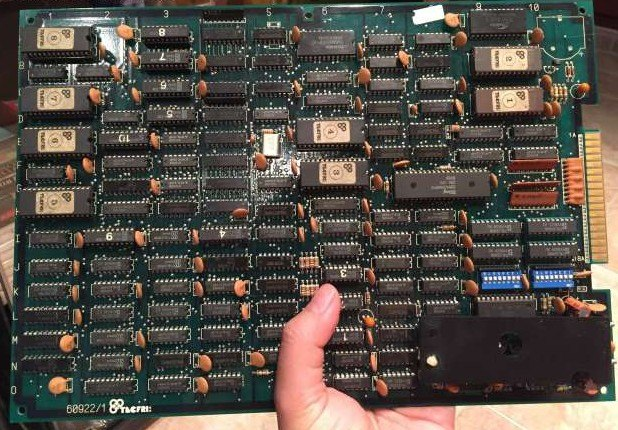
Tricky Doc likewise survives as a genuine Tecfri commercial product, with original circuit boards documented in preservation collections. Its key chronological evidence precedes the usual 1987 release designation: the company was already advertising the game at FER 86. A preserved 1986 advertisement connects the board to sales official Juan José Domenech. That places Tricky Doc within the company’s public sales pipeline before its standard catalog year, weakening any assumption that its developer credits must denote ordinary Tecfri employment throughout 1987.
The actual Tricky Doc board is revealing in another way. Its identity is not merely a textual attribution passed from one database to the next; physical hardware bearing Tecfri identification can be examined. For collectors, differences in board layout, labels, connectors, and ROMs may separate an original local production version from later conversions. A photograph of the board is therefore a historical document, not just decoration. The date the photograph was taken, however, need not be the date the board was made. A photograph of surviving vintage equipment can be modern even when the board it depicts dates to the 1980s.
Speed Ball is especially helpful for understanding the corporate split. It is identified in technical sources as a Tecfri / Desystem S.A. product and is described in Spanish preservation records as original work under both names. That double identity is tangible evidence of the development company’s continued visibility in a Tecfri original long after the 1985 Gaelco founding. The machine’s presentation also stretched beyond an ordinary screen-only cabinet: external score displays and specialized hybrid cabinets were contemplated or manufactured for the video-pinball style of play. Rumatic, Recreativos Real, and Electro Plastic-related machines belong to this wider cabinet network, not to three additional original software titles.
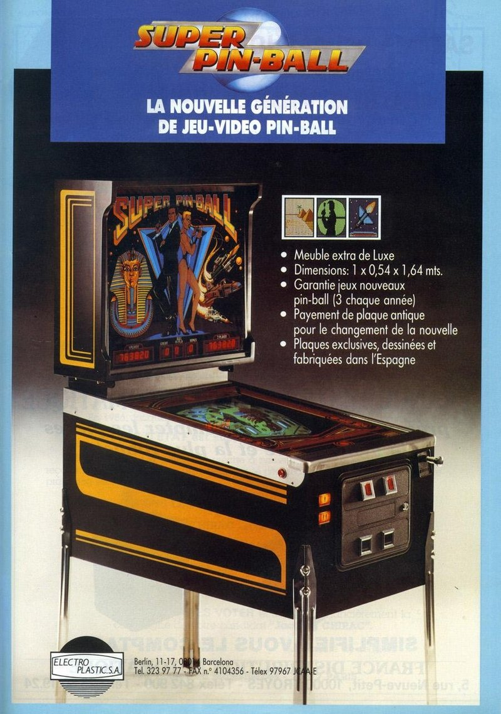
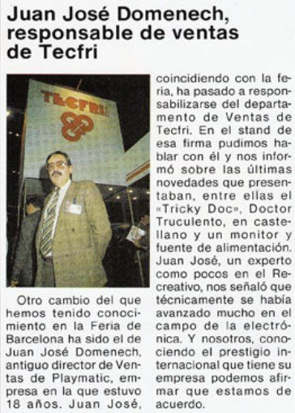
The survival of credits to the original trio on all three 1987 releases is important enough to state carefully. A credit supports meaningful involvement. It does not disclose whether work was completed in 1985, 1986, or 1987; whether a former Desystem shareholder was later paid as a contractor; or whether partial designs were finished by different staff. Valero’s recollection of Desystem shareholding offers one possible route by which organizational and technical relationships persisted, but no final corporate agreement has been located. The commercial games themselves are real. The mechanism by which the first team’s work reached the market after the split remains one of the company’s most interesting unanswered questions.
The experiments that did not become ordinary releases
Behind the commercial catalog lies a smaller but meaningful experimental record. MPP Multi Pole Position, whose surviving schematics are dated May 1, 1985, proposed a linked racing arrangement for several players. It is associated with the internal decision that preceded the engineering team’s departure. Even without a mass-produced cabinet, dated diagrams make the project a legitimate part of Tecfri’s design history. There is no verified commercial launch for the system.
Music Ball is related to the late Speed Ball family. Period materials describe an experimental or advertised product, and modern emulator references place an instance of Music Ball in 1988 under Tecfri/Desystem credits. Hardware and graphic data connect it with Speed Ball, but the available record does not establish a normal commercial release into the operating arcade market. The 1987–1988 dates describe a development and preservation window rather than a verified public launch. Advertising a product or completing a prototype is not identical to manufacturing it in commercial quantities.
Another Tecfri prototype, Sea Wolf, appears in preservation records as a 1987 project related to the Sauro hardware family. It was unrelated to earlier commercial arcade games sharing that name and is not a verified seventh Tecfri commercial original. The technical records support a prototype identity, not a separate established product line. Its absence from one company database and presence in technical preservation records illustrates the uneven survival of original-product evidence.
These experimental projects illuminate the aspirations of the engineering organization. A multi-player linked driving system, flexible arcade-board electronics, and hybrid video-pinball products suggest designers looking beyond simple interchangeable action-game boards. They also reveal the limits of the surviving evidence. Some innovative proposals remained on drawings, while other titles had almost-complete software but uncertain commercial circulation. Serious preservation work gives those projects space in the story without promoting every prototype into a released arcade game.
How many games did Tecfri make?
The most defensible number for Tecfri’s currently confirmed original commercial video games is six: Ambush, Hole Land, Crazy Rally, Sauro, Speed Ball, and Tricky Doc. That is not the same as counting all products that carried the company name. A historic manufacturer could release only a handful of its own programs while being responsible for many more licensed or distributed boards. Tecfri appears to have operated exactly that kind of business.
A role-aware comparison of preservation records identifies 49 distinct Tecfri-associated title or product identities after collapsing alternate machine records and adding one documented prototype omitted from a main company listing. Those 49 identities are not 49 original games, and one is even a problematic post-operating-era attribution. Within the working classification, six are confirmed commercial originals, three are documented prototypes or unreleased projects, and twenty-two are convincingly licensed foreign-derived products. Five have strong technical bootleg or hardware-copy identifications; two carry conflicted or tentative license status; eight are actual documented Tecfri products whose specific authorization remains unproved; two are database-level attributions without adequate physical evidence; and one—Gaplus dated 1992—creates a serious chronological anomaly.
The five technically classified copy variants include Karate Champ, Sector Zone, Shoot Out, Spartan X, and Tiger-Heli. Bank Panic illustrates the two-case conflicted group because current preservation labels disagree over bootleg versus licensed status; 1942 is explicitly tentative in one Tecfri-board listing. The authorization-unresolved class contains Action Fighter, Gun Smoke, Karate Champ Player VS Player, Knuckle Joe, Legendary Wings, Road Fighter, Super Qix, and Trojan. Some have surviving Tecfri-manufactured hardware or manuals and exact parent-game ROMs. Those facts establish physical connections but cannot alone settle whether Tecfri held a sublicense.
Booby Kids and an unidentified database entry recorded as Desconocido are weaker still. No adequate surviving Tecfri artifact presently supports either as a confirmed physical product. They deserve a searchable archival note, not a confident claim that two additional game designs were released. Likewise, a Gaplus PCB associated with Tecfri carries a 1992 date in MAME and related technical records, even though the enterprise had ceased arcade operations and entered bankruptcy years earlier. The board’s emulator-source history is real, but the unexplained year does not demonstrate a Tecfri corporate revival in 1992.
The count is thus both more modest and more interesting than the largest number a catalog can produce. Six original games capture Tecfri’s creative output; twenty-two licensed titles reveal commercial relationships with some of the world’s major arcade manufacturers; and the disputed boards reveal the uncertainty inherent in reconstructing regional hardware manufacture decades after the fact. A reader who sees a Tecfri board in a collection deserves the specific role and level of confidence, not an unqualified label implying Tecfri invented every game it touched.
From industrial expansion to the crisis of 1987
The jump from Tecfri’s confident 1986 publicity to its 1987 collapse is one of the starkest transitions in the surviving record. Photographs of newly enlarged premises, reports on modern assembly machinery, interviews with senior executives, and export-related distinctions present a company committed to growing beyond its initial success. Within the following year, an original article preserved in the Spanish trade archive carried the unequivocal headline “TECFRI suspende pagos”—Tecfri suspends payments. The contrast is not evidence that every expansion decision was mistaken, but it does show how abruptly the public business narrative changed.
The surviving 1987 magazine clipping reports that the company had invested approximately 200 million pesetas in machinery and facilities over the preceding year and a half. It also says employment had risen from about thirty to fifty people, nearly doubling the earlier staffing level. These are reported figures attributed to the period coverage, not a set of independently inspected payroll or capital accounts. They help explain the scale of the enterprise that had to be sustained through demand, collections, financing, and continuing license obligations. A company with a sizable assembly workforce and capital equipment faced a different cash-flow challenge from a small office merely commissioning software development.
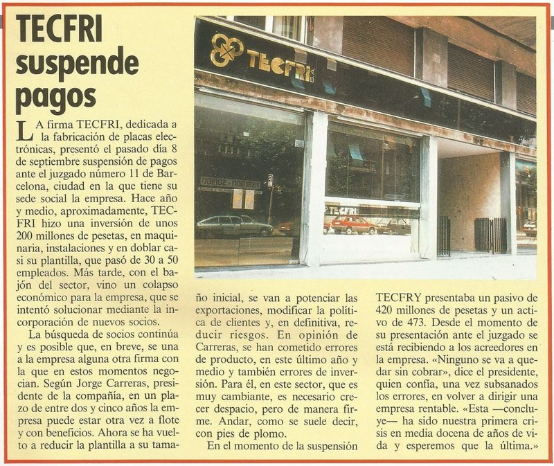
The same report describes management seeking new investors and changing the company’s business posture. Carreras spoke of reducing risks, sharpening customer policy, and rebuilding export activity. The original article says Tecfri had presented suspension-of-payments proceedings before Barcelona Court of First Instance No. 11 on September 8, 1987. At the time, the magazine reported liabilities of about 420 million pesetas and assets of about 473 million pesetas. On the surface those totals would appear to place the claimed book value of assets above liabilities; yet the real problem was the ability to pay creditors as obligations fell due. A headline about suspended payments is not contradicted merely because one preliminary publication printed a higher asset figure. Timing, valuation, receivables, availability of cash, and creditors’ confidence all affect the practical solvency of a business.
The precise court-filing date deserves qualification. The contemporaneous September account explicitly says September 8. When the court later issued Tecfri’s bankruptcy order in 1989, it also made September 8, 1987 the provisional retroactive starting date for the effects of the bankruptcy and referred to that date in connection with the earlier request. A later account of the judicial facts, reproduced in a 1995 Spanish Supreme Court decision, gives November 9, 1987 as the formal date the company petitioned for suspension of payments. Without the original 1987 proceeding’s complete docket, there is no responsible basis to assert that these date references describe the same procedural act or that one source simply made a typographical mistake. What is certain is that the company was publicly in serious payment difficulty during September 1987 and was involved in formal proceedings before Court No. 11.
Leadership changed before the collapse was public. Period notices report that Antonio Inglés left Tecfri in June 1987. Another trade item followed his career in July. His departure is historically significant because he had been associated with Tecfri’s export promotion, foreign licensing, and public portrayal of professional management. A connection in chronology is not the same as a proven causal relationship; the documents do not establish that Inglés’s decision caused the company’s financial failure, nor does the company’s later collapse prove he anticipated its entire course. The relevant fact is that a conspicuous senior executive had already left while the organization was entering a crisis.
Court-appointed intervenors later produced a markedly different balance-sheet picture. A report dated May 26, 1988, described in the later judicial record, stated liabilities of 435,750,355 pesetas and assets of 392,714,101 pesetas. The resulting shortfall was approximately 43 million pesetas. The later court figures differ from the earlier magazine’s 420 million and 473 million totals in date, evidentiary context, and potentially valuation assumptions. They do show that the company’s insolvency case had moved well beyond a temporary publicity problem. The suspension process ultimately failed to produce an agreement because the creditors’ meeting lacked sufficient quorum.
The legal ending was delayed but decisive. On June 5, 1989, Barcelona Court of First Instance No. 11 declared Tecfri S.A. in necessary bankruptcy. The order was subsequently printed in Spain’s Boletín Oficial del Estado on July 7. It identified the enterprise at Berlín 11–13, bajos, and described its work in electronic products, gaming machines, and electronic components. The official record makes clear that the company’s 1987 operating collapse and its 1989 formal bankruptcy were separate events; referring to 1987 as the end of the arcade operation should not erase the years of subsequent proceedings.
A final, unexpected connection with Gaelco
The most surprising detail in the 1989 court publication is the identity of the company that sought Tecfri’s compulsory bankruptcy: Gaelco S.A. The order explicitly identifies Gaelco as a direct Tecfri creditor and records an accepted but unpaid bill of exchange for 2,240,000 pesetas, due June 30, 1987. In the earlier suspension-of-payments file, Gaelco was listed and judicially recognized for 2,287,172 pesetas. After the creditors’ arrangement failed, the court found that Gaelco had standing to request compulsory bankruptcy and granted the petition.
This creates a documented link between two phases of the same engineering community. Gaelco had been established in 1985 by people who left Tecfri’s original development operation. Four years later it appeared in the judicial record not merely as a successor in the history of Spanish arcade design but as a creditor of its former colleagues’ company. The order does not describe the work, sale, or transaction that generated the unpaid bill, so it would be speculative to assert that the debt represented a particular game-development contract, piece of equipment, or dispute over intellectual property. Nor does the filing prove personal animosity. It is a concrete business and legal relationship; the human motivations remain outside the document’s demonstrated facts.
The situation also reinforces why the 1985 separation should not be understood as the immediate disappearance of all ties. Earlier evidence shows the founding trio’s credits continuing on late Tecfri games, while Tecfri/Desystem and related industrial identities remained in use. The unpaid 1987 Gaelco obligation supplies an additional, independent reason to expect some subsequent commercial interaction, but its precise nature has not been identified. Together the sources suggest an interconnected electronics industry in which former collaborators could become separate corporate entities and still transact with one another.
The legal aftermath continued beyond the 1989 declaration. Later published judicial material describes unsuccessful attempts to locate company property at the former Barcelona headquarters and a location in Hospitalet de Llobregat, as well as further proceedings concerning the bankruptcy estate. A subsequent court judgment addressed fraudulent-bankruptcy matters and the movement or concealment of assets. These proceedings belong to the legal history of Tecfri and can be documented, but care is essential with individual responsibility: some accessible later decisions anonymize the defendants. The available anonymized criminal judgment cannot establish the defendant’s identity as any particular Tecfri executive. The company’s financial and legal ending is sufficiently clear without unsupported personal accusations.
The broader causes of Tecfri’s deterioration remain incompletely established. Rapid investment, the cost of manufacturing, difficulty collecting receivables, the risks of international licenses, market conditions, and management decisions all represent possible pressures. The contemporary evidence documents an expansion and later financial distress, not a complete forensic model assigning percentages of blame. At the level of the surviving record, the important arc is clear: a firm that had successfully developed original games and participated in international licensing reached ambitious manufacturing scale, encountered a breakdown in payments in 1987, and passed through unsuccessful creditor negotiations into bankruptcy by 1989.
The machines, photographs, and paper trail that survive
Tecfri’s surviving archive is broader than the games themselves. It includes original Spanish and Japanese promotional flyers; advertisements for licensed products; photographs of circuit boards with maker markings; period interviews with executives; trade-fair stands; accounts of the Barcelona factory expansion; and photographs of the Tecfri Levante premises. The 1987 headquarters exterior supplies a rare visual anchor for a company often encountered only as a manufacturer name inside an emulator menu. The material also provides some of the best evidence for distinguishing original design from local authorized assembly.
The Japanese Ambush flyer names Nippon Amuse. The Japanese Hole Land flyer prints the UEP commercial identity and an explicit Tecfri license line. The Spanish Finalizer advertisement states Konami license, Spanish production, and European distribution. The Sauro advertisement claims design and manufacture by Tecfri while furnishing a contemporary address for the Valencia operation. The physical Crazy Rally and Tricky Doc boards offer evidence of hardware marking and production form. Rather than serving as interchangeable colorful decorations, these artifacts can each support a precise historical claim in the surrounding text.
Magazine scans give a different perspective: they show how the company spoke about itself at the moment. The 1986 Jorge Carreras and Antonio Inglés interview discussed quality, professional management, foreign competition, and the firm’s self-described technological and financial independence. The factory-expansion coverage displayed machinery and executives as symbols of industrial ambition. The later payment-suspension report took readers behind the new signs and equipment to the burden of financial obligations. Read together, these pages are a counterpoint to retrospective profiles that concentrate on gameplay and neglect the business conditions that made each game possible.
Not every preserved scan is equally legible. Some archived magazine photographs are only a few hundred pixels wide, and enlarged images cannot recover lost printing detail. The original high-resolution image is preferable where available; a tiny thumbnail may remain useful as visual context while being unsuitable for exact quotation. Modern digital photographs of old PCBs document original hardware without necessarily dating the photographs themselves to the 1980s. Similarly, a modern English translation of a Japanese advertisement is best displayed alongside the untouched original, with the translation’s present-day status acknowledged.
The physical machines require equally precise identification. A dedicated cabinet manufactured for an original Tecfri release is not the same thing as a generic Spanish or JAMMA cabinet running a Tecfri board. A historical operator photograph showing a locally converted cabinet may be excellent evidence of how a game was used, but it does not magically make that cabinet a factory original. The most trustworthy illustrated history labels what the evidence actually depicts and uses genuine photographs rather than attractive invented reconstructions. A genuine flyer, PCB, or manual remains useful evidence even when no authenticated photograph of a dedicated factory cabinet survives.
The history that remains open
Several important details remain unresolved despite the unusually rich preservation record. The first is the date of the company’s formation: May 1982 and January 1983 are both attested in different historical accounts, while the relevant original corporate incorporation records have not been obtained. The second is the precise legal relationship among Tecfri S.A., Desystem S.A., Tecfri Levante S.A., and Electro Plastic S.A. They should be described according to documented corporate identities and operational links, not blended into one imaginary legal organization.
The third is how Valero, Jonama, and Quingles remained credited on 1987 Tecfri games after forming Gaelco in 1985. The evidence makes their technical contribution credible but does not fix the calendar, contracts, or disposal of Desystem interests. The fourth is the license status of a handful of surviving Tecfri-marked Japanese-game boards, especially when modern emulator nomenclature contradicts printed advertising. The fifth is the anomalous 1992 dating of a Tecfri-associated Gaplus board, which cannot presently be reconciled with the firm’s earlier collapse.
Finally, the difference between the September 8 and November 9 references in Tecfri’s suspension-of-payments chronology remains a documentary issue worthy of further court-file examination. The September contemporary report, the 1989 retroaction order, and the later judicial recital should all be preserved rather than replacing one another. None of these open questions prevents the broad historical account from being told, and none justifies inventing a confident answer where the documents do not supply one.
Tecfri’s surviving story combines creativity with a much larger industrial endeavor. Its first engineers helped establish a path from Barcelona-built arcade designs to Japanese commercialization. Its managers negotiated licenses and manufacturing relationships across multiple overseas suppliers. Its employees and partner businesses populated boards, built machinery, maintained offices, and sought a place in a demanding international industry. The company did not survive that expansion, but the games, documents, physical boards, and later careers of its engineers preserve an unusually detailed chapter in Spanish arcade history. The most interesting lesson is not that Tecfri made more games than its rivals. It is that a handful of original games emerged from a complex and energetic electronics network—and that the same network continued to shape Spanish arcades after Tecfri itself had ceased operating.
Catalog of Tecfri-associated arcade titles and products
The following working census separates authorship, licensing, technical copying, and unverified database attribution. Its divisions describe the evidence presently available, not moral judgments about every period business practice. Different board sets, ROM revisions, and cabinets for the same game are not counted as new unique titles. A company name on a board establishes an important physical connection without necessarily proving original game design. This catalog is separate from the mainstream narrative because many surviving products cannot fairly be assigned a unique creation story.
Six original commercial games
- **Ambush (1983):** The inaugural Desystem/Tecfri-developed flying and shooting game, with a licensed Japanese version marketed by Nippon Amuse.
- **Hole Land (1984):** A second original whose international rights were licensed to Japan's Uni Enterprise, except for Spain, while localized speech and documentation supported regional production.
- **Crazy Rally (1985):** Vertically scrolling driving game by the first design team, later represented in licensed regional versions as well as Tecfri-branded hardware.
- **Sauro (1987):** A released late-period action game with Tecfri design/manufacture claims and preserved regional variants; the trio's development timing remains uncertain.
- **Speed Ball (1987):** An original video-pinball game credited Tecfri / Desystem S.A., with additional cabinet and external-scoreboard arrangements.
- **Tricky Doc (1987):** A late original already publicly advertised by FER 86, with Tecfri-marked surviving boards and credits connected to the early team.
Three documented prototype or unreleased projects
- **MPP Multi Pole Position (1985):** A proposed linked multi-player racing system documented by dated schematics, not a verified mass-market title.
- **Music Ball (development circa 1987–1988):** A Speed Ball-related project known through advertising and preservation records; ordinary commercial release has not been proved.
- **Sea Wolf (1987):** A prototype associated with Sauro-family hardware, not a documented separate commercial original.
Twenty-two licensed foreign-derived products
- **Moto Tour / Zippy Race (Irem):** A locally marketed form of the Irem motorcycle game.
- **Bomb Jack (Tehkan):** Original Japanese design with Tecfri Spanish production/board materials.
- **Buggy Challenge (Taito):** A licensed Spanish Tecfri product later used within other manufacturers' cabinet offerings.
- **Express Rider (Data East):** A Tecfri-associated product attributed to legitimate manufacture/distribution in the role census.
- **Finalizer (Konami):** The surviving Spanish sheet specifically says produced in Spain and distributed in Europe by Tecfri under Konami license.
- **GT-2 / Konami GT (Konami):** Tecfri commercialization of a Konami driving title; label forms vary across surviving sources.
- **HAL21 (SNK):** Tecfri-marked Spanish-market product derived from the SNK game.
- **Indoor Soccer (Universal):** An original Universal title represented by a Tecfri-licensed Spanish board.
- **Ninja Emaki (Nichibutsu):** Preservation records describe a licensed Tecfri version, with company markings visible on surviving electronics.
- **Pinball Action (Tehkan):** Tecfri licensed versions preserved in more than one hardware/display configuration.
- **Salamander (Konami):** A substantial Tecfri/Konami licensed board and manual/flyer record.
- **Side Arms (Capcom):** A preserved Tecfri-licensed version, with board photographs documented in Spanish archives.
- **Soldier Girl Amazon (Nichibutsu):** Licensed Tecfri hardware represented in emulator preservation.
- **The Speed Rumbler (Capcom):** A Tecfri-license set with Spanish manuals and regional commercial material.
- **Star Force (Tehkan):** A Tecfri-associated authorized version of the Tehkan game.
- **Terra Cresta (Nichibutsu):** A Nichibutsu title present in the Tecfri licensed-product record.
- **UFO Robo Dangar (Nichibutsu):** Licensed Tecfri-manufactured hardware identified in contemporary-preservation material.
- **Break Thru (Data East):** Tecfri-marked Spanish board, manual and flyer, with differences in preserved PROM content.
- **Choplifter (Sega):** Tecfri and Sega-marked boards support an authorized Spanish version.
- **Pitfall II (Sega):** Period Tecfri advertising and board markings explicitly indicate a Sega license.
- **Scooter Shooter (Konami):** Board and documentation identify Konami licensing; one record suggests original Konami hardware with Tecfri ROM labels.
- **Wonder Boy (Sega):** Tecfri-era advertising claims Sega licensing and some hardware carries Sega identification; modern MAME's bootleg label is an unresolved terminology conflict noted in the historical classification.
Five strong technical bootleg or hardware-copy identifications
**Karate Champ, Sector Zone / Seicross, Shoot Out, Spartan X, and Tiger-Heli** appear in current hardware and ROM preservation records as Tecfri-associated bootleg or copy variants. The technical classification describes the surviving product and program lineage; it does not independently establish the contractual position or intent of each individual involved in manufacturing it. In particular, a later dump is not proof of when a particular unit was originally sold.
Two conflicts and eight unresolved authorization cases
1942 remains a tentative Tecfri-PCB bootleg attribution, marked with a question in preservation descriptions. Bank Panic remains contradicted by a bootleg-labelled Tecfri set and separate license wording. Neither belongs among confirmed authorized products without further evidence, but their legal status is not settled.
Eight additional Tecfri-associated physical/documented products have no individually established rights position: Action Fighter (whose earlier 1985 Tecfri date is incompatible with Sega's 1986 original), Gun Smoke, Karate Champ Player VS Player, Knuckle Joe, Legendary Wings, Road Fighter, Super Qix, and Trojan. Their physical markings or service documents matter, but a recognized license for a different title by the same Japanese company does not automatically establish rights for these versions.
Two insufficiently verified attributions and one later anomaly
Booby Kids and an unidentified item listed as Desconocido remain insufficiently supported as physical Tecfri products. They are database leads rather than confirmed commercial releases. Finally, Gaplus (Tecfri PCB) survives as a technical identification with a puzzling 1992 date in emulator metadata. It remains in the broad association census for transparency but outside the confirmed 1983–1987 operating-era count.
The sum is 49 associated identities across the seven role groups: six originals, three prototypes, twenty-two licensed products, five strongly technical copy variants, two conflicted cases, eight license-unresolved products, two weak attributions, and one chronologically anomalous item. This is a transparent working preservation census, not a claim that Tecfri developed 49 distinct games or manufactured all forty-nine commercially during its short operating life.
Sources and archival documentation
The dates, roles, and corporate distinctions above are based on a combination of contemporary documents, official records, technical-preservation records, and participant recollections. Contemporary material is preferred for the fact that it reports: marketing statements, game advertisements, photographed facilities, public appointments, and events should still be read with attention to their purpose and limitations. Oral histories can explain technical practices that seldom appear in official paperwork, but individual memories of dates and financial values may be imprecise. Emulator records are valuable for identifying ROMs and surviving physical variants, not automatically for identifying contractual ownership.
Key resources include the official Spanish Boletín Oficial del Estado industrial recognition for Tecfri (order of December 30, 1985, published May 3, 1986); the July 7, 1989 BOE publication of the June 5 bankruptcy order (page 21615); Game Machine of June 1, 1984 concerning the Uni Enterprise / Hole Land agreement; Revista AZAR 1986–1987 Tecfri coverage and executive interviews preserved through Recreativas.org and Associació A.R.C.A.D.E.; Javier Valero’s interview with Retrolaser; the 2007 Universitat Pompeu Fabra study of Catalan videogame production; Generalitat/Cultura Digital historical accounts; the Tecfri company and game collections at Recreativas.org; and ROM/hardware preservation records from MAME and ArcadeItalia.
Relevant publicly accessible starting points are:
- Tecfri company history and image archive — Recreativas.org
- Tecfri hemeroteca — original-period press and photo index
- Retrolaser interview — Javier Valero, from Tecfri to Gaelco
- Spain’s 1986 preferential-industry order for Tecfri
- BOE July 7, 1989, bankruptcy declaration (printed page 21615)
- Tecfri-associated preserved Spanish arcade versions — Recreativas.org
Have historical Tecfri evidence?
If you have original photographs, trade advertisements, manuals, circuit boards or firsthand recollections, corrections and well-documented contributions are welcome.
Contact Arcade Side B.